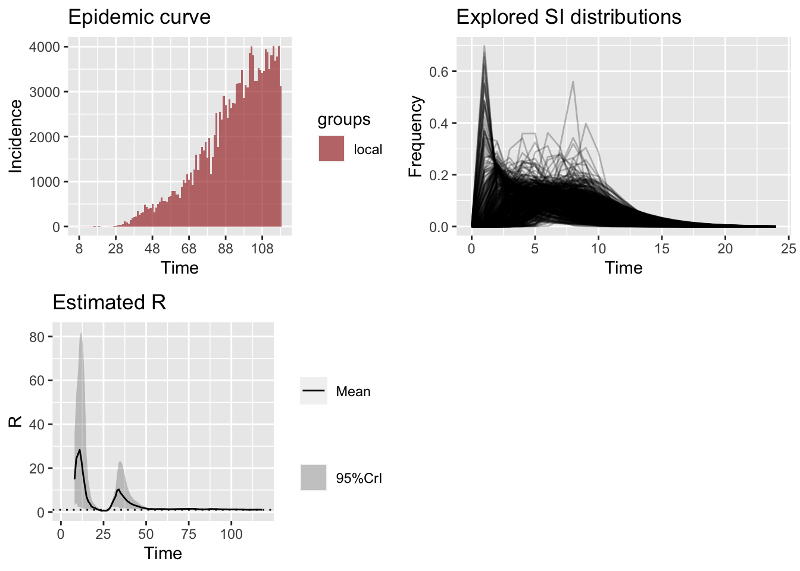
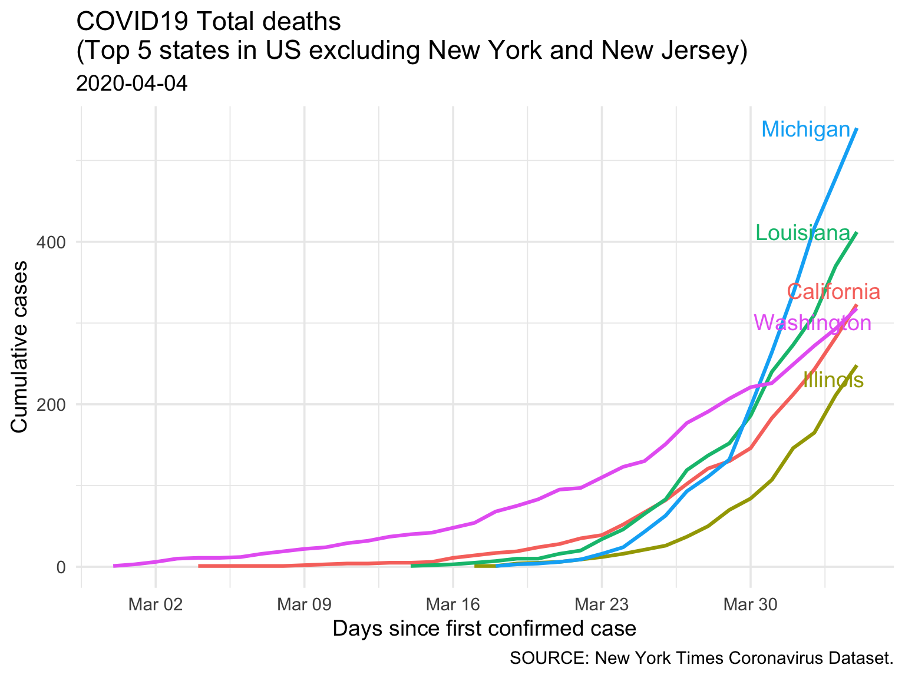

COVID19 Live Report
About this report
Disclaimer
Purpose
Data sources
Volunteering opportunity
What skills are useful
Found an error?
1
World
1.1
Daily Incidence, Recovery, Deaths
1.2
Case Fatality Rate
1.3
Confirmed Cases
1.4
Deaths
1.5
Recovery-to-death ratio
1.5.1
Recovery-to-death ratio (South and South-East Asia)
1.5.2
Recovery-to-death ratio (Middle East)
1.6
3-day % changes
2
USA
2.1
Overall trend
2.2
Confirmed Cases
2.3
Deaths
3
Bangladesh
3.1
Bangladesh official data (TBD)
3.2
Report based on publicly available data
3.3
Bangladesh in South Asia
3.3.1
Infection
3.3.2
Deaths
4
Publications
5
Resources
References
Published with bookdown
COVID-19 Live Report
Report 2
USA
2.1
Overall trend
2.2
Confirmed Cases
Report last updated:
2020-04-04
Data last refreshed:
: 2020-04-03

2.3
Deaths
